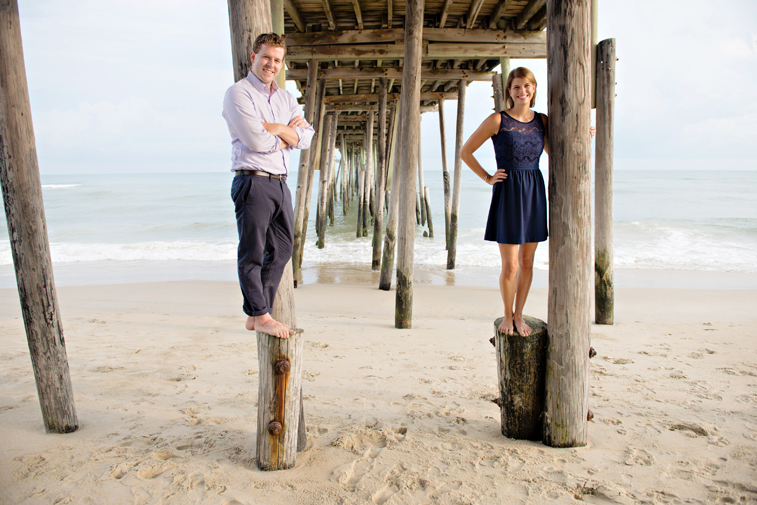

- 


Photos were taken by : Daniel Pullen Photography

When
Saturday, September 27, 2014
Ceremony at 5:00 PM.
Reception to immediately follow.
Where
Our event will take place at Jennette's Pier. The address is 7223 So. Virginia Dare Trail | Oceanfront, Milepost 16.5, Beach Road | Nags Head, North Carolina 27959. There is plenty of parking and it is free.
Weather permitting, the ceremony will occur on the beach to the left of the pier, followed by a cocktail hour and reception dinner above the pier. In the event of inclement weather, the ceremony will be moved above the pier.
How
For our out of town guests, fly into the San Diego International Airport
(airport code SAN).
Hyatt Regency Mission Bay is offering us special rates for our wedding weekend. It's a beautiful place and a great locale. The hotel is within walking distance to Marina Village or a quick 2 minute drive.
San Diego spring weather is typically mild (60s - 70s), but could get chilly once the sun goes down. The ceremony will be outside and the reception will be inside, but be sure to bring a sweater or light jacket just in case.
If you have any questions about any of the above, feel free to email us at jennyandgrayden@gmail.com.

-
 Pepper LangBest ManI have known Pepper my whole life and he is my best friend in the world. We grew up in New Mexico playing guns, dressing up like girls (his idea), and just making the most of the time we had together. I lived with Pepper after college for 2 years and it was such an amazing experience having my childhood friend as a roommate when I was an adult. If you see him at the wedding make sure to ask him why he is my best man.
Pepper LangBest ManI have known Pepper my whole life and he is my best friend in the world. We grew up in New Mexico playing guns, dressing up like girls (his idea), and just making the most of the time we had together. I lived with Pepper after college for 2 years and it was such an amazing experience having my childhood friend as a roommate when I was an adult. If you see him at the wedding make sure to ask him why he is my best man. -
 Warren DuthieGood Friend & RoommateI have never in my life met someone that can make me laugh like Warren and at the same time want to kill him a minute later. His humor is unmatched and very unusual. Warren and I shared a room for 2 years. We even had a bathroom with his and her sinks. I have not known Warren very long but I know he will be a life long friend. Ask Warren about his financial planning robot. It is sick!
Warren DuthieGood Friend & RoommateI have never in my life met someone that can make me laugh like Warren and at the same time want to kill him a minute later. His humor is unmatched and very unusual. Warren and I shared a room for 2 years. We even had a bathroom with his and her sinks. I have not known Warren very long but I know he will be a life long friend. Ask Warren about his financial planning robot. It is sick! -
 Patrick GabaldonHigh School & College FriendPat was my closest friend in high school. We did everything together; soccer, basketball, track, worked at the same restaurant, and I even drove him home from school most days. Patrick would come over so much that my Dad would put him to work on chores around the house. We even roomed with each other my freshman year of college. He always has a great attitude and is so much fun to be around. I love him.
Patrick GabaldonHigh School & College FriendPat was my closest friend in high school. We did everything together; soccer, basketball, track, worked at the same restaurant, and I even drove him home from school most days. Patrick would come over so much that my Dad would put him to work on chores around the house. We even roomed with each other my freshman year of college. He always has a great attitude and is so much fun to be around. I love him. -
 Jeremy PoperOldest BrotherI love that Jeremy is competitive. He never made it easy for us to beat him at anything. Every time I go home I realize how much of a MAN my older brother is. He knows how to do soooo much manly stuff. I am so proud of my older brother. He is the first one of my brothers to have child and he is an awesome daddy. He wont admit this but I am a way better ping pong player than him.
Jeremy PoperOldest BrotherI love that Jeremy is competitive. He never made it easy for us to beat him at anything. Every time I go home I realize how much of a MAN my older brother is. He knows how to do soooo much manly stuff. I am so proud of my older brother. He is the first one of my brothers to have child and he is an awesome daddy. He wont admit this but I am a way better ping pong player than him. -
 Jacob PoperMiddle BrotherJakey is the definitely the coolest one out of my brothers. He is always doing fun stuff and looking good while he is doing it. Jacob and I have always been pretty close. In high school and college I really appreciated him letting me tag around with him and his friends. He made me feel like one of the guys and never like a younger brother.
Jacob PoperMiddle BrotherJakey is the definitely the coolest one out of my brothers. He is always doing fun stuff and looking good while he is doing it. Jacob and I have always been pretty close. In high school and college I really appreciated him letting me tag around with him and his friends. He made me feel like one of the guys and never like a younger brother. -
 Garret PoperYoungest BrotherGarrett is my little bigger brother. He is a whole 3" taller than me. Garrett and I have always had an interesting relationship. We shared a room growing up and lived with one another in college for a year. Probably a year after I graduated from college Garrett and I became really close with one another. Our relationship continues to grow even though we are on opposite coasts.
Garret PoperYoungest BrotherGarrett is my little bigger brother. He is a whole 3" taller than me. Garrett and I have always had an interesting relationship. We shared a room growing up and lived with one another in college for a year. Probably a year after I graduated from college Garrett and I became really close with one another. Our relationship continues to grow even though we are on opposite coasts.


Dear friends and family,
We registered. Yes, we made a couple trips to B, B & B (code: Bed, Bath and Beyond), to go through their gigantic store. At the end of our wish list marathon, we accumulated a good amount of items.
We love all of you deeply, and are so blessed that you would want to honor us with gifts to start our new life together. But we are asking in love and sincerity that you choose to bless us only from the following:
1. Use the money to get to San Diego.
Having you here with us to celebrate means more to us than spatulas or magic bullets, we promise! And let's face it, the old econ ain't exactly booming these days.
2. Visit www.bedbathandbeyond.com to check out our registry. On the bridal & gift registry page, search for Jenny Hammond or Grayden Poper.
And if you do notice something on our list that you have creatively learned to do without, please give us your feedback (we are still rookies too).
All our love,
Jenny & Grayden